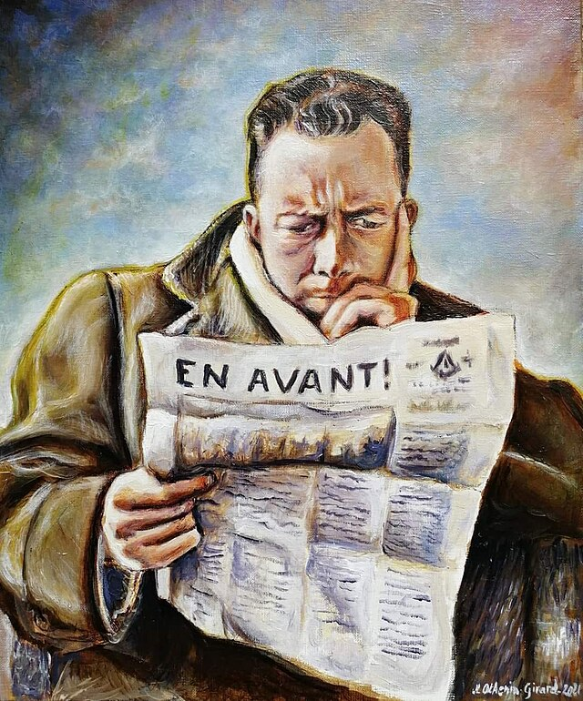

Why I Chose Camus

Source: Wikimedia CommonsFinding Meaning in the Absurd
I first encountered Albert Camus during a particularly difficult time in my life. Like many people, I was grappling with questions that seemed to have no answers: What's the point of it all? Why do we struggle when everything ends the same way?
Camus didn't offer me easy answers. Instead, he offered something better: permission to stop searching for answers that don't exist, and to find meaning in the search itself.
"In the depth of winter, I finally learned that within me there lay an invincible summer."
The Philosophy That Changed My Perspective
What struck me most about Camus was his honesty. Unlike philosophers who tried to construct elaborate systems to explain away life's difficulties, Camus acknowledged the fundamental absurdity of existence—and then said, "so what? Live anyway."
His philosophy isn't about despair. It's about liberation. Once you accept that the universe offers no inherent meaning, you're free to create your own. Every moment becomes a choice, every action a small rebellion against the void.
Why He Matters Today
In our age of anxiety, climate crisis, and political uncertainty, Camus feels more relevant than ever. We're all facing absurdity on a global scale. But Camus shows us that facing absurdity doesn't mean giving up—it means engaging more fully with life.
He reminds us that solidarity with others, commitment to justice, and the simple pleasures of existence—sunlight on water, a good conversation, a meaningful piece of work—are not distractions from the big questions, but the answers themselves.
"One must imagine Sisyphus happy."
A Personal Hero
Camus wasn't perfect. He had his flaws, his blind spots, his contradictions. But perhaps that's what makes him a hero rather than a saint. He was thoroughly human, struggling with the same questions we all face, and somehow managing to create beauty and meaning in the midst of uncertainty.
That's why I chose to build this website about him. Not to worship him, but to share what I've learned from his work—and to continue the conversation he started about how to live authentically in an absurd world.